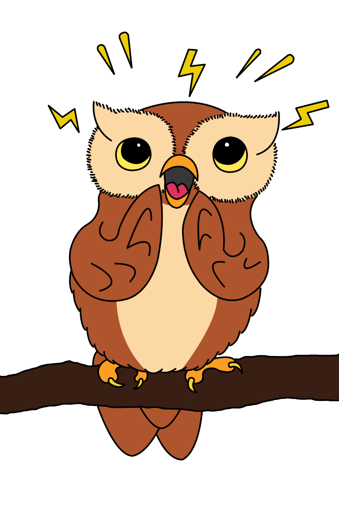
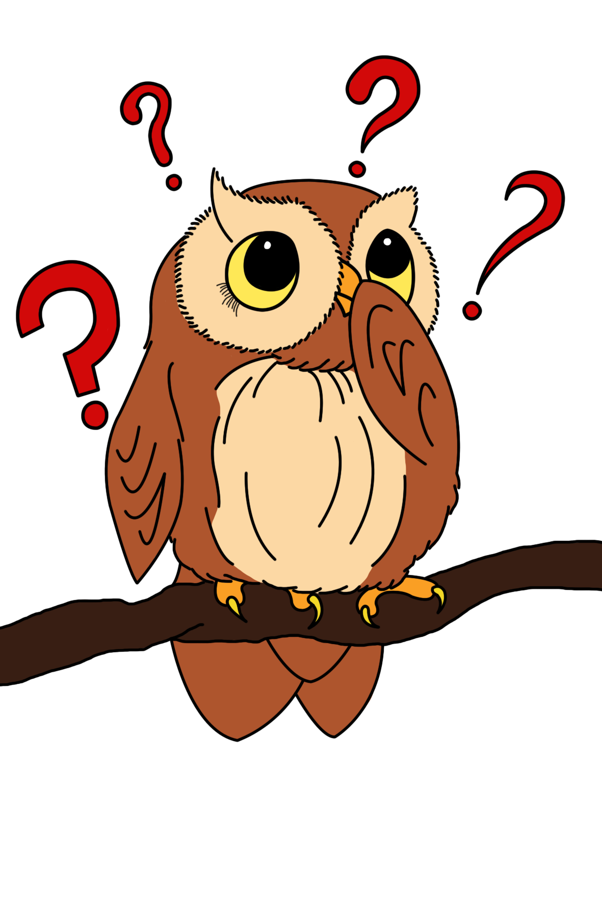

Qui suis-je ?
Je m’appelle Magalie. J’ai un parcours varié qui m’a permis de devenir la femme que je suis aujourd’hui. Apprendre a toujours été une passion, et cette curiosité est une vraie force dans mon accompagnement.
La naturopathie s’est révélée à moi comme une évidence. Elle était déjà présente dans mes valeurs : écouter le corps, respecter son rythme et avancer avec douceur.

La gestion du stress au XXIe siècle
Le stress moderne peut venir de nombreuses sources. L’objectif est d’identifier ce qui pèse sur votre équilibre et de mettre en place des habitudes simples, réalistes et durables.

FAQ
Quelques réponses simples pour mieux comprendre la naturopathie et son rôle dans votre quotidien.
À qui s’adresse la naturopathie ?
La naturopathie s’adresse à toutes les personnes qui souhaitent prendre soin de leur corps naturellement, quel que soit l’âge ou le mode de vie.
Quelle est la différence avec la médecine traditionnelle ?
La naturopathie adopte une approche globale de la personne : physique, émotionnelle, environnementale et sociale. Elle ne remplace pas la médecine traditionnelle, elle vient en complément.
C’est quoi la vitalité ?
La vitalité représente votre énergie disponible, comme une batterie. Elle dépend notamment de l’alimentation, du sommeil, du stress et de l’activité physique.
C’est quoi l’hygiène de vie ?
L’hygiène de vie regroupe les habitudes qui soutiennent votre équilibre : alimentation, sommeil, hydratation, mouvement, gestion du stress et relations sociales.
La naturopathie rejette-t-elle la médecine traditionnelle ?
Non. La naturopathie ne remplace pas un suivi médical. Elle propose un accompagnement complémentaire orienté vers le bien-être et la prévention.
Dois-je changer toute mon alimentation ?
Non. Le but est de mettre en place des ajustements simples et progressifs, adaptés à votre rythme, vos besoins et votre quotidien.
Une question ou envie de prendre rendez-vous ?
Laissez-moi un message, je vous répondrai avec plaisir.